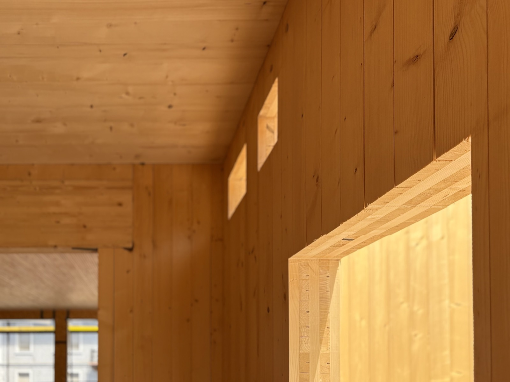

Mass Timber & CLT
Engineered wood panels strong enough to replace concrete floors and steel beams. South America now presses its own, and Uruguayan panels have already shipped to the Caribbean. The climate is still the hard part.

- Mass timber is lumber glued into slabs. CLT panels are cross-layered at 90°, which is what lets wood act like a concrete floor.
- Budget a 3 to 10% structural premium over cast-in-place concrete if your team has built with it before. First-timers routinely land at 20 to 26%.
- The panels weigh up to 80% less than the concrete they replace. That shrinks your foundation, and on soft coastal ground it can pay for the premium by itself.
- The “no supply in Latin America” line is out of date. Uruguay has been pressing 50,000 m³ a year since 2022 and has shipped as far as the Dominican Republic.
- For a house in Panama or Costa Rica it is still a stretch. Not because of the wood, but because of what humidity and termites do to it.
Mass timber is wood promoted to a heavyweight. Cross-laminated timber stacks lumber in alternating directions and presses it into slabs stiff enough to replace a concrete floor. It is holding up apartment blocks a dozen storeys tall, it stores carbon rather than emitting it, and left exposed it looks like nothing else. What follows is what it costs, what it saves, and the two tropical realities that decide whether any of that matters to you.
How it's assembled
Boards, called lamellae, get stacked at 90° to each other and bonded under pressure into one panel. Cross the grain like that and the wood stops caring which direction the load comes from. That is the whole trick.
Panels are cut to your drawing file at the mill, down to the door openings and the holes for the plumbing. They arrive on a truck numbered, and a small crew bolts them together like very heavy flat-pack furniture. Glulam handles the beams and columns. DLT and NLT do the same job with nails or dowels instead of glue, for anyone allergic to adhesives.
The site stays dry. There is no formwork, no curing, no waiting on the weather. That is where the schedule savings come from.

What mass timber costs
The honest answer is that it depends almost entirely on whether your contractor has done it before.
At the material counter, mass timber runs roughly $50 to $70 per square foot of structural package against $40 to $55 for steel and concrete. By weight the gap looks brutal: CLT lands near $1,200 a tonne, structural steel near $600, cement near $130.
Whole buildings tell a gentler story. A US Forest Service study of a twelve-storey Portland building put the timber version 26% higher on front-end cost. A separate three-city study found a Minneapolis mass timber design at $491 per square foot against $475 for cast-in-place concrete, a premium of 3.4%. Same material, wildly different answers.
The difference is experience. A general contractor who has never handled panels pads the material budget and over-estimates the labour, and the estimate becomes self-fulfilling. Ask any bidder how many mass timber projects they have finished. If the answer is zero, price the learning curve into your own contingency, not theirs.
The lightness dividend
Here is the part that gets buried under the carbon story, and it is the part that matters most on a tropical lot.
A mass timber structure can weigh up to 80% less than the concrete and steel equivalent. Everything downstream gets cheaper. Foundations and excavation typically come down 15 to 20%. Delivery truckloads drop by around 90%, which is not a rounding error when your site is at the end of eleven kilometres of dirt road in Pedasí. Erection runs 25 to 30% faster, with fewer trades on site. And exposed timber is already a finished ceiling, so the drywall and the drop ceiling never get bought at all.
Read it as one trade: you pay more for the structure and get it back on the ground, in the schedule and in the logistics. Whether the trade nets out depends on how remote your site is and how deep your soil is.
Timber, rated line by line
| Factor | Rating | Notes |
|---|---|---|
| Cost | 🔴 | 3–10% premium with an experienced crew, 20–26% without one |
| Sustainability | 🟢 | Stores carbon in the building for the life of the building |
| Build speed | 🟢 | Bolts together dry, 25–30% faster erection |
| Aesthetics | 🟢 | The structure is the finish. No drywall, no drop ceiling |
| Strength | 🟢 | Replaces concrete floors and steel beams outright |
| Foundation load | 🟢 | Up to 80% lighter, which shrinks footings and excavation |
| Moisture | 🔴 | Panels must stay dry from the mill to the roof and forever after |
| Termites | 🔴 | The single hardest problem in a tropical build |
| Fire | 🟢 | Chars slowly and predictably; engineered to a rating |
| Regional supply | 🟡 | Real in South America now. Still an import to Central America |
Can you build with it here?
Most guides still say there is no CLT in Latin America. That stopped being true a while ago.
Uruguay is the anchor. Arboreal has been pressing panels at Tacuarembó since 2022 on what it calls South America's largest CLT and glulam line, turning out around 50,000 m³ a year and shipping from Brazil to the Dominican Republic. The IFC and the ILX Fund put $40 million into the site. Panels crossing to a Caribbean island is not a thought experiment any more.
Brazil has built the biggest thing in the region. Urbem supplied nearly 700 m³ of CLT and over 600 m³ of glulam for a shopping centre in Atibaia, finished in seven months with no structural concrete pour at all. Timber houses now go up in under ten days across four Brazilian states.
Chile has three producers running on plantation radiata pine, though combined capacity has been modest at roughly 6,000 m³ a year. Researchers at the Universidad de Santiago have been shake-table testing panels for high-rise use, which is the right question to ask in a country that moves that much.
Argentina joins this month. Cambium Build's first plant at Gobernador Virasoro in Corrientes is a $20 million-plus project, and the last container of Slovenian press equipment was on its way to Buenos Aires as of this September.
So the supply chain exists. It just does not exist here. Between Tacuarembó and a lot in Boquete sit several thousand kilometres and a customs process, and there is no Central American mill closing that gap. For now every panel arrives as freight, at freight prices.
Water and termites
Cost you can negotiate. Climate you cannot.
Mass timber is designed to live dry. Panels are protected in transit, dried out before close-in, and detailed so water never sits on end grain. That discipline is achievable in Oregon. It is a different sport in a place where the air is at 85% humidity for months and the rain arrives sideways every afternoon.
Then there are the termites. Central America has subterranean species that will find untreated cellulose with a persistence that has to be seen to be believed. Protecting a mass timber structure here means treated lamellae, physical and chemical barriers at every ground contact, generous roof overhangs, and an inspection habit you keep for the life of the house. All of that is possible. It is also cost, and it eats the premium argument alive.
Fire, oddly, is the fear you can drop. Mass timber chars on the outside in a slow, measurable way, and the char layer insulates the structural core underneath. It is tested and rated, which is exactly why codes now let it go up eighteen storeys. It behaves nothing like stick framing in a fire.
Our read for a tropical house today: mass timber is a genuinely important material for low-carbon mid-rise and commercial work, and the region is building the industry to serve it. For a single-family home in Panama or Costa Rica, structural wood that already belongs to this climate makes more sense — which is why we point people at bamboo and guadua first, and at ICF or reinforced concrete for the parts that have to shrug off a storm. Keep watching CLT. Just don't be the first person on your beach to try it.
Curious what timber would actually add to your budget?
We build in reinforced concrete by default, and we will tell you honestly when an alternative method earns its premium and when it does not. Our 2026 cost guide has real line-item numbers from builds in Pedasí, Boquete and Bocas del Toro.
See real 2026 build costs →Frequently asked questions
What is CLT, in plain terms?
A slab made of lumber. Boards are stacked in layers running at 90° to each other and glued under pressure into one rigid panel. Crossing the grain that way makes it strong in both directions, which is what lets a wood panel do the job of a concrete floor or a load-bearing wall.
How much more does mass timber cost than concrete?
Between 3 and 26% on the structure, and the spread is mostly about experience. Well-executed projects with crews who have done it before land near 3 to 10%. A US Forest Service study of a twelve-storey building put a first-of-its-kind timber design 26% above its concrete alternative. Some of that gap comes back through lighter foundations and a shorter schedule.
Can you actually get CLT in Latin America?
Yes, from South America. Arboreal in Tacuarembó, Uruguay has run a large CLT and glulam line since 2022 and ships as far as the Dominican Republic. Brazil and Chile both produce, and Argentina's first plant is being installed at Corrientes now. What does not exist is a Central American mill, so a panel landing in Panama or Costa Rica is still an import.
Is mass timber good for a tropical house?
Rarely, today. The carbon and speed benefits are real, but heat, constant humidity and subterranean termites all attack a wood structure at once, and defending against them costs money that cancels the advantage. Regionally grown bamboo or guadua is usually the more practical structural wood in this climate.
Is mass timber a fire risk?
Less than people assume. It chars from the outside in at a slow, predictable rate, and that char layer shields the structural core. It is engineered and tested to a fire rating, which is why building codes now permit it up to eighteen storeys. Light wood framing behaves very differently.
Sources & verification
Figures in this guide were checked against primary and authoritative sources on 6 September 2026. Immigration, tax, and cost figures change — always confirm the current rules with the official body or a licensed professional before acting.
- WoodWorks — mass timber and CLT construction guidance
- USDA Forest Service Research — construction and life-cycle cost, 12-storey mass timber vs concrete
- Wood Central — Argentina’s first CLT plant; Arboreal, Uruguay; Urbem, Brazil
- Critchfield Construction — mass timber vs steel and concrete project costs